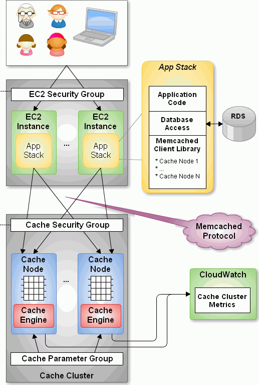

AWS Elasticache
AWS ElastiCache Briefing
Choosing to use
What is it?
- Amazon ElastiCache is a web service that provides an in-memory cache for your AWS application.
- This cache is a scalable cluster of Memcached or Redis protocol-compliant server nodes.
- This service has a number of features to streamline the management, monitoring and operation of these nodes.
Notes notes
- Amazon ElastiCache is protocol-compliant with Memcached and Redis, so applications that already use another existing Memcached or Redis environment can work seamlessly with this service
What problems does ElastiCache strive to solve?
TODO
- Problem 1: Building a caching cluster requires provisioning a server, installing caching software and knowledge of how to setup a cluster.
- Problem 2: Operating a caching cluster requires configuring it, understanding and mitigating its failure modes, updating software, backups (if possible) and more.
- Problem 3: Monitoring a caching cluster requires gathering a cluster's metrics and having a useful way of interpreting them.
- Problem 4: Automate all of the above to make a scalable, elastic and fault-tolerant cluster.
Notes notes
- p2: backups only for redis
- p2: configuring it is not a solved problem but hopefully one that starts out with more desirable defaults
- p3: i.e. a visual way perhaps a dashboard
- p3: you also need to understand how to take action on those metrics
- p4: fault-tolerant here means being able to lose a node and have one automatically take its place.
Fundamental semantics
What is it 'about'?
What is it 'about'? (cont)
ElastiCache aims to reduce read load on your database, web server, or anything that can benefit from caching.
It's about setting up and operating a cache cluster in the cloud with minimal effort.
It's about observing how your cache is performing to improve it.
What are the primary operations?
- Create, edit, reboot and delete cache clusters
- Create, edit, promote and delete Redis replication groups
- Create, edit, list and reset cache parameter groups
- Create, edit, assign/authorize and delete cache security groups and subnet groups
- Create, show, copy, delete and restore Redis snapshots
Notes notes
Don't read or explain em all There's 34 actions in all
Is it simple?
Theoretically yes - it's just a FewClicks™ caching but …
- Different node types can impact throughput, latency.
- Different configurations can impact reliability, durability, elasticity.
- Conceptually grouping Redis and Memcached works until it doesn't.
So NO
Notes notes
TODO
- many actions
- configuration, node types and redis/memcached disconnect can make it hard to reason about
- redis and memcached have different concepts and features
- redis has replication and backup. memcached has auto-discovery.
- redis can be durable
- Grouping the two can be confusing as one concept may not apply to another i.e. replication and some limits don't apply to others i.e. node limit per cluster
Architectural overview
Key components
- engine: Redis or Memcached
- node: Smallest building block with its own DNS name and port
- cluster: Group of nodes with the same engine type
Notes notes
- node runs an instance of memcached/redis
- redis only has one node per cluster
Key components (cont)
Key components (cont)
- cache parameter group: Group of parameters to be associated with a cluster
- cache security group: Controls network access to public cluster
- cache subnet group: Controls network access to private cluster
- Redis replication group: One primary/write cluster and up to five read clusters
Notes notes
- Think of replication group as cluster group
Key components (cont)

Key features/functions
- Provision and operation of clusters of Memcached/Redis nodes
- Detailed monitoring statistics of nodes via Cloudwatch
- Failed nodes are automatically detected and replaced
- Auto discovery of Memcached nodes
Notes notes
- Auto-discovery works by having an endpoint which is in charge of registering nodes
- Auto-discovery requires an additional client for this functionality. Amazon supports Java and PHP by default.
Key features/functions (cont)
- Backup and restore including automated daily snapshots
- Replication groups for Redis
- Full integration with VPC
- Accessible from AWS Console, API or CLI
Notes notes
- Backups are made to s3. Backups can be done manually or automatic. Snapshot mechanism can be used to migrate a Redis cache to ElastiCache
- Redis replication - ability to replace primary within a group
- Redis replication group has no client and requires using API
Key indicators for use
- Your app, db or caching target is on AWS
- You want to use Redis or Memcached
- Your cache needs are large enough to require a caching cluster i.e. in the GB range
Notes notes
- Cache sizes go from standard small (1.3GB) to enhanced xxlarge (29GB)
Key indicators against use
- Inverse of the indicators for use
- Have differing opinions on Redis and backups or security
- You want to use unsupported versions of Redis or Memcached
Notes notes
ElastiCache handles the above Redis topics for you so it's only a problem if your opinions differ.
Fundamental tradeoffs
You get:
- Managed: Provisioning, management and even patch updating are automated
- Compatible: Native access to Memached or Redis
- Scalability: Easily add and remove nodes
- Reliability: Automatic failure detection and recovery
- Great integration with AWS: metrics, security, notifications
Fundamental tradeoffs (cont)
You give up:
- Being anywhere but AWS
- Fine grained control of node failure recovery
- Fine-grained control of Redis backups, slaves of slaves in replication groups and having more than 5 slaves in a replication group.
- Certain Redis commands
- Preferred tooling for metrics and notifications around your caching engine.
- Unsupported versions of Redis or Memcached
Alternatives
- RedisLabs
- Memcached and Redis services
- Scalability is defined by just memory size. No nodes, clusters or engine-specific configuration.
- Different pricing tiers for more features i.e. replication, multiple A-Z, backups
- Available on AWS, Azure, SoftLayer and GCE
- Backups and imports: any of the previous environments or to an ftp server
Alternatives (cont)
- Memcachier - Memcached only. Similar to RedisLabs in simplicity.
- Redis only
- Redis to Go - Limiting plans and features. Poor documentation. Early Heroku addon
- RedisGreen - Simple but with more features - provides dedicated machines, hourly backups and metrics dashboard
- Microsoft Azure Redis Cache - Redis features somewhere between RedisLabs and ElastiCache
Recommendation: RedisLabs and Azure Redis Cache are worth investigating.
Application characteristics
- Environment: Hosted on AWS
- Docs: Excellent, like most AWS documentation
- API quality:
- Well done for a non-trivial API.
- Each operation and its parameters are documented.
- API versioning done by release date.
- Standard SDKs: java, .NET, ruby, php, python
- Dependencies: Redis or Memcached and AWS infrastructure i.e. EC2, S3, CloudWatch
Application characteristics (cont)
- Community: Not much but enough for production concerns
- Support Forum - Actively monitored by Amazon employees
- Not much in the wild: few results on GitHub, presentations mainly by Amazon.
- Longevity
- Started with Memcached in 2011 and Redis since 9/2013.
- Marked as Beta
Application characteristics (cont)
- Experience reports
- PlaceIQ
- Used ElastiCache Memcached to cache requests to Nginx
- End-to-end response times improved 83% and resulted in net savings
- Health Guru
- Used ElastiCache Memcached to cache partial pages, pages and client-side widgets
- PlaceIQ
Notes notes
- PlaceIQ
- Used ElastiCache Memcached to cache requests to Nginx
- End-to-end response times improved 83% and resulted in net savings
- Health Guru
- Used ElastiCache Memcached to cache partial pages, pages and client-side widgets
- Team was able to implement a solution in less than a week, saves the team 20 hours a week and resulted in 92% improvement in response times
Operational characteristics
- Latency
- Low latency to other Availability Zones (AZ) in the same region
- According to this post, 99th percentile latency from a Redis node to an EC2 instance was in single digit milliseconds except for the micro and small types which were orders of magnitude more.
- Throughput
- Caches are designed to provide high throughput.
- Blog post used redis-benchmark and found throughput ranging from 10k to 70k ops per second, depending on node type.
notes notes
- Amazon describes latency across their services with low, medium and high.
- Without knowing if this company is properly benchmarking on EC2, only treat numbers as rough orders of magnitude
- As long as its a cache hit, throughput can be high
- redis-benchmark comes with Redis and allows you to specify which commands to run.
Operational characteristics (cont)
- Throughput (cont)
- Diminishing returns on throughput for largest Redis nodes. This is because Redis is single-threaded and in the largest instances you're mostly paying for more unused cores.
notes notes
- mid-range nodes offer higher ECUs - EC2 Computing Units
- Yes, I've only talked about Redis. Found no numbers on Memcached but since it's multi-threaded it should do better with larger nodeOBs.
Operational characteristics (cont)
- Scalability
- Writes scale out for Memcached - 20 node limit and then manually request
- Writes do not scale out for Redis - one node limit per cluster
- Reads scale out only for Redis - 5 node limit per cluster
- Both write and read nodes scale up but require new clusters
- There may be demons with scaling up Redis replication, Redis 2.6.X and > 25GB
Operational characteristics (cont)
- Elasticity
- Adding and removing nodes is elastic - takes a few minutes
- Scaling up is not elastic - must upgrade whole cluster
- Requires new cluster setup i.e. configuring security
- Requires restoring from a backup or recaching.
- Node failure detection and recovery is automated elasticity
- Scaling is not automated
Notes notes
- Takes a few minutes assuming you're configured correctly
- Clients poll every minute for auto discovery
Operational characteristics (cont)
- Security
- By default network access is turned off to your cluster
- To allow access to a public cluster, create a security group and associate it with an EC2 security group
Notes notes
- "IP-range based access control is currently not enabled for Cache Clusters"
- "Currently, all clients to an ElastiCache Cluster must be within the Amazon EC2 network" - You can always hope
Operational characteristics (cont)
TODO
- Security
- Supports private clusters within a Virtual Private Cloud (VPC). This requires:
- A VPC with at least one subnet
- A Cache Subnet Group for your VPC to associate with previous subnet
- Allocating enough CIDR blocks to your subnet to allow for spare IPS needed for cache node replacement
- Supports private clusters within a Virtual Private Cloud (VPC). This requires:
Operational characteristics (cont)
- Failure Modes
- Region fails - that's a problem
- AZ fails - you can mitigate this
- Cache node fails - automatically detected and replaced
- Redis primary fails - Can result in write downtime for 3-6 min. If primary fails to heal, manually promote a read
- Cache node reboots
Notes notes
- Could explain how cache node failures work
What does it cost?
- Billing is per hour per node ($0.022 to $1.207).
- Reserved Cache Nodes
- Pay up front for 1 or 3 years.
- Three tiers - the more you pay upfront, the less you pay per hour.
- Data transfer: Only charge is on EC2 instance to another AZ - only on the EC2 end.
- Backup: Storage is $0.085/GB every month. Data transfer is no charge.
- For more, see pricing page
Notes notes
- Partial hours get rounded up.
- Billing starts when node is in 'Available' state.
In Use
What are the critical decisions?
Notes notes
- How do I handle upgrades? Auto upgrading patch versions are enabled by default. See Docs for more
Which caching engine do I choose?
- Memcached
- Pro: Multi-threaded
- Pro: Low complexity
- Pro: Wide adoption - some databases may only be memcached compliant, easy to configure
- Con: Max value is 1MB
- Con: No persistence
Notes notes
- low complexity: just a key/val store, can know all commands quickly
Which caching engine do I choose? (cont)
- Redis
- Pro: Powerful data types and commands to leverage them
- Pro: Max value is 512MB
- Pro: Persistence, Lua scripting, pub/sub and more
- Pro: Replication - allows for data across multiple AZs
- Cons: Single-threaded and more complex
Recommendation: Use Memcached until you need a Redis data type or another feature i.e. multiple AZs.
Notes notes
- Data types: Sorted sets for time-series, hashes for sessions, lists
Which node type should I choose?
- Factor cost - per system characteristic if possible
- Factor total memory
- Easy to scale out with Memcached.
- Must choose more accurately with Redis.
- Factor throughput - More ECUs and cores on larger boxes
- Factory latency - double check but most likely avoid micro and small
- Recommendation: Depends on above. Avoid micro on production
Notes notes
- cost - consider ops/$
- memory ranges from .2GB to 68GB
- throughput - be aware of Redis single-thread and largest boxes
- Amazon suggests starting out small on Memcached and monitoring memory, cpu and hit rate
- micro doesn't have AOF or snapshot or …
How do I mitigate failure modes?
- AZ failure - Have nodes in multiple AZs.
- Only possible out of the box with Redis replication groups
- Node failure - Keep your cache hit rate up
- Memcached
- Docs recommend being able to handle one or 2 nodes failing
- For example, for a 14GB requirement, better to have 2 7GB nodes than one 14 GB
- Memcached
notes notes
- Possible to handle AZ failure in Memcached but requires doing this in the app layer and increasing the number of writes to redundant nodes
How do I mitigate failure modes? (cont)
- Node failure (cont)
- Redis
- Use replication groups for minimal cache loss
- Manual or daily snapshots but with caveats
- Redis
- Node reboots
- Memcached: Nada
- Redis: Turn on Append-Only Files (AOF) for reboot failure
Notes notes
- snapshots can have a performance impact spawning child process which can block parent for up to 10s
- AOF works by replaying file on bootup which results in restored cache
- reboots need to happen for configs to set in
What Cache Parameters should I be aware of?
- Memcached has over a dozen and Redis has 30+
- Memcached - memcached_connections_overhead
- Total memory = Usable memory + Connection memory
- Default is 100 MB on non-micro instances
- Increase when observing swap usage and degraded performance
- Decrease if you want more memory to use
What Cache Parameters should I be aware of? (cont)
- Redis
- reserved-memory
- Total memory = Usable memory + reserved memory
- Default is 0
- Consider increase if using replication, AOFs or snapshots
- appendonly: enables AOF
- appendfsync: Controls how often AOF writes to disk
- reserved-memory
Notes notes
If no memory for non-redis tasks, this can lead to memory paging
How should I persist with Redis?
- AOF
- Pro: Just a config switch away
- Pro: No financial cost
- Con: Guards against reboot and nothing else
- Backups
- Pro: Daily automated snapshots
- Pro: Manual snapshots + API allow for custom intervals
- Con: Can have performance impact
How should I persist with Redis? (cont)
- Backups (cont)
- Con: Costs to store data
- Persistance Groups
- Pro: Read nodes are tightly in sync with primary
- Pro: Can scale reads out
- Pro: Can handle write failover with almost no cache loss
- Con: Incur cost of new nodes
Notes notes
Recommendation: Choose based on system needs and cost. All of em if you can
Summary
Questions
- Is there auto scaling for ElastiCache?
- No but it's possible with their API
- How difficult is it to run and maintain a Redis Replication group?
- What AWS services can use ElastiCache and which engine can they use?
- Beanstalk, process in EC2, RDS and more
- Are there overlapping use cases for the Redis engine and DynamoDB?
Notes notes
- Script works by adding and removing nodes based on average memory thresholds
Essential Resources
- Documentation - User Guide, CLI and API
- Presentations
- Slides
- AWS Blog - Posts tagged with ElastiCache
- More Resources - FAQ and Release Notes
What's next?
- ElastiCache future looks bright
- Redis support released last September
- Major features like backup and restore were released end of April
- Eventual Redis 3 support?
- Competitors
- Will RedisLabs become more ElastiCache or vice versa?
- Will Azure Redis keep up with ElastiCache?
Recommendations for/against use?
- If you're on AWS
- And need caching at the GB scale with Memcached or Redis
- And want the OPS handled for you
- Then Yes
- Beware of unexpected limits, unavailable Redis features and know your configuration
Final thoughts
- What else should we know?
- I'm happy to answer questions afterwards.
- There's more to caching software than just Redis or Memcached.
- What do you wish was different or better?
- Wish ElastiCache was easier to reason about, had less failure modes and had automated elasticity
- Also wish for scaling up with no downtime